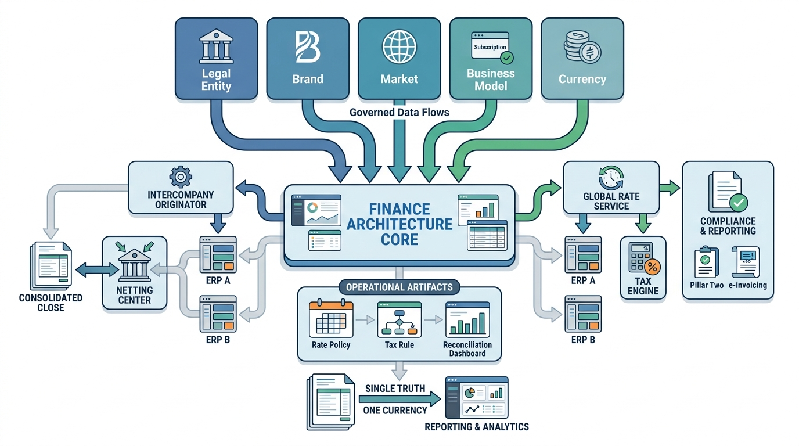

Part I — FOUNDATIONS: How Money Moves Through an Enterprise
Global by Design: Entities, Currencies, Jurisdictions and Brands

Image generated by Google Gemini (gemini-3-pro-image-preview)
Part I — FOUNDATIONS: How Money Moves Through an Enterprise

Image generated by Google Gemini (gemini-3-pro-image-preview)